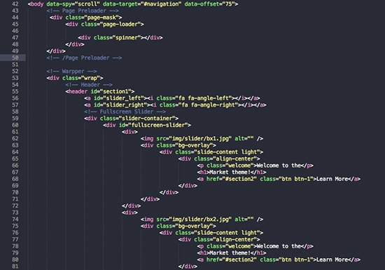

Thank you for purchasing my template. If you have any questions that are beyond the scope of this help file, please feel free to email via my user page contact form on Wrapbootstrap. Thanks so much!
This theme is a responsive layout. The header of this template is nested within a header section . We have also added the blog section with it. The general template structure is the same throughout the template. Here is the general structure.

The organization of the CSS is one of our priorities.
These are the CSS file we're using in the template:
The second file contains all of the specific stylings for the page. The file is separated into sections using:
<!-- Library CSS -->
<link rel="stylesheet" href="css/bootstrap.min.css">
<link rel="stylesheet" href="css/bootstrap-theme.min.css">
<link rel="stylesheet" href="css/team-member.css" media="screen">
<link rel="stylesheet" href="css/fonts/font-awesome/css/font-awesome.css">
<link rel="stylesheet" href="css/animations.css" media="screen">
<link rel="stylesheet" href="css/prettyPhoto.css" media="screen">
<!-- Theme CSS -->
<link rel="stylesheet" href="css/style.css">
<link rel="stylesheet" href="css/global.css">
<!-- Skin -->
<link rel="stylesheet" href="css/colors/blue.css" class="colors">
/*----------------------------------------------------*/
/* Jquery Google map Section
/*----------------------------------------------------*/
//Google map
jQuery('#maps').gMap({
address: "House: 325, Road: 2, Mirpur DOHS, Dhaka, Bangladesh",
zoom: 16,
controls: {
panControl: true,
zoomControl: true,
mapTypeControl: true,
scaleControl: true,
streetViewControl: true,
overviewMapControl: true
},
markers: [{
latitude: 23.835369,
longitude: 90.367172,
html: "<h4>FIFO Themes</h4>Wordpress, HTML5/CSS Themes",
popup: true
}]
});
In addition to the custom scripts, I implement a few "tried and true" plugins to create the effects. This plugin is packed, so you won't need to manually edit anything in the file. The only necessary thing to know is how to call the method. For example:
/*==========================*/
/* Navigation Scrolling
/*==========================*/
var navigationHeight = jQuery("#navigation").outerHeight();
jQuery('.nav a, .nav li a, .align-center a, .caption-inside a, .top-logo a, .video-section a').click(function(){
jQuery('html, body').animate({
scrollTop: jQuery( $.attr(this, 'href') ).offset().top - navigationHeight + 44
}, 800, 'easeInQuad');
/* Fix jumping of navigation. */
setTimeout(function() {
jQuery(window).trigger('scroll');
}, 900);
return false;
});
I've included logo psd with this theme:
The template is set to use the blue skin as default. There are 10 predefined color skins. If you want to use another color you just have to include the specific css file to make it work. For example if you want to use orange color skin please do the following.
Default setting is:
<!-- Skin --> <link rel="stylesheet" href="css/colors/blue.css" class="colors">
User Defined Orange Color Setting:
<!-- Skin --> <link rel="stylesheet" href="css/colors/orange.css" class="colors">
All you have to do is to replace the css file name to "orange" from "blue".
Font Awesome is a @font-face iconset that you can change size and color of the icons using CSS.
If you need more information, please visit this site: http://fortawesome.github.com/Font-Awesome/
HTML Markup:
<i class="fa fa-edit"></i> <i class="fa fa-cog"></i>
We have used bx slider plugin in our template. This slider is responsive and work with all the devices properly.
For more information please visit http://bxslider.com/
The filter is driven by the Isotope script - http://isotope.metafizzy.co/
Here's an example of usage:
Filter Options:
<!-- Portfolio Filters -->
<div id="filters">
<ul class="clearfix">
<li><a id="all" href="#" data-filter="*" class="active"><h5>All</h5></a></li>
<li><a href="#" data-filter=".wordpress"><h5>Wordpress</h5></a></li>
<li><a href="#" data-filter=".jquery"><h5>jQuery</h5></a></li>
<li><a href="#" data-filter=".php"><h5>PHP</h5></a></li>
<li><a href="#" data-filter=".css"><h5>CSS</h5></a></li>
<li><a href="#" data-filter=".html"><h5>HTML</h5></a></li>
</ul>
</div>
<!--/Portfolio Filters -->
Filter Data:
<!-- Portfolio Item With PrettyPhoto --> <div class="portfolio-item one-four wordpress html css"> <div class="img-holder"> <img class="img-responsive" src="img/portfolio/portfolio2.jpg" alt=""> <div class="img-overlay"></div> <div class="overlay-effect"> <span class="RoundBg"><a data-gal="prettyPhoto[galname]" href="img/portfolio/portfolio2.jpg"><i class="fa fa-search"></i></a> </span> <span class="RoundBg"><a href=""><i class="fa fa-link"></i></a> </span> </div> </div> </div> <!--/Portfolio Item With PrettyPhoto -->
Regarding contact form as main part of Contact Us section, only thing you need to do is to setup your email address.
To do this, please open "ajax/process.php" file and change the email on this line:
// CHANGE THE BELOW VARIABLES TO YOUR NEEDS $to = 'yourmail@gmail.com';
The template provides decent fallbacks for old browsers, such as Internet Explorer 8, – not bug free. IE8 basically doesn’t support any CSS3, except for some selectors, if you really need pixel perfect for old browsers you can try add http://css3pie.com/ on your web site.
Images:
Subtle Patterns:
Fonts:
Scripts:
jQuery - http://www.jquery.com/
Bootstrap Framework - http://getbootstrap.com/
Bx Slider - http://bxslider.com/
Isotope Jquery plugin - http://isotope.metafizzy.co
jQuery Parallax- http://www.ianlunn.co.uk/plugins/jquery-parallax/
Sticky Plugin- http://labs.anthonygarand.com/sticky
Modernizr- http://modernizr.com/
tytabs - http://blog.carefordesign.com
jQuery gMap - http://github.com/marioestrada/jQuery-gMap
Once again, thank you so much for purchasing this template. As I said at the beginning, I'd be glad to help you if you have any questions relating to this template. No guarantees, but I'll do my best to assist. If you have a more general question relating to the templates on Wrapbootstrap, you might consider send email to support@fifothemes.com.
Monzurul Haque